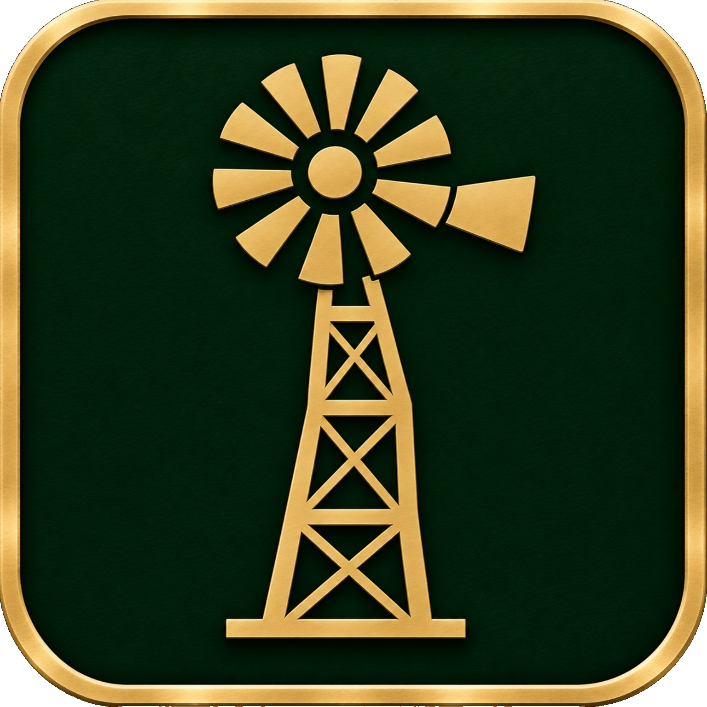
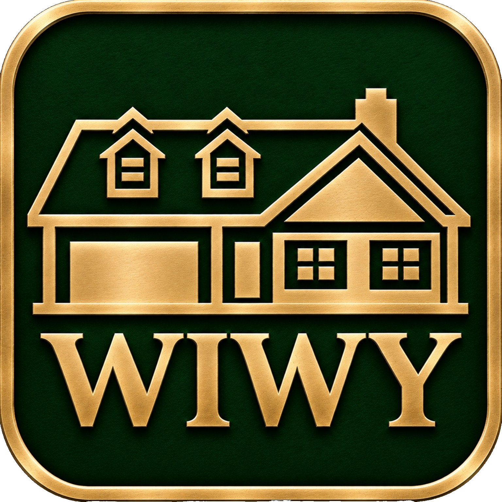
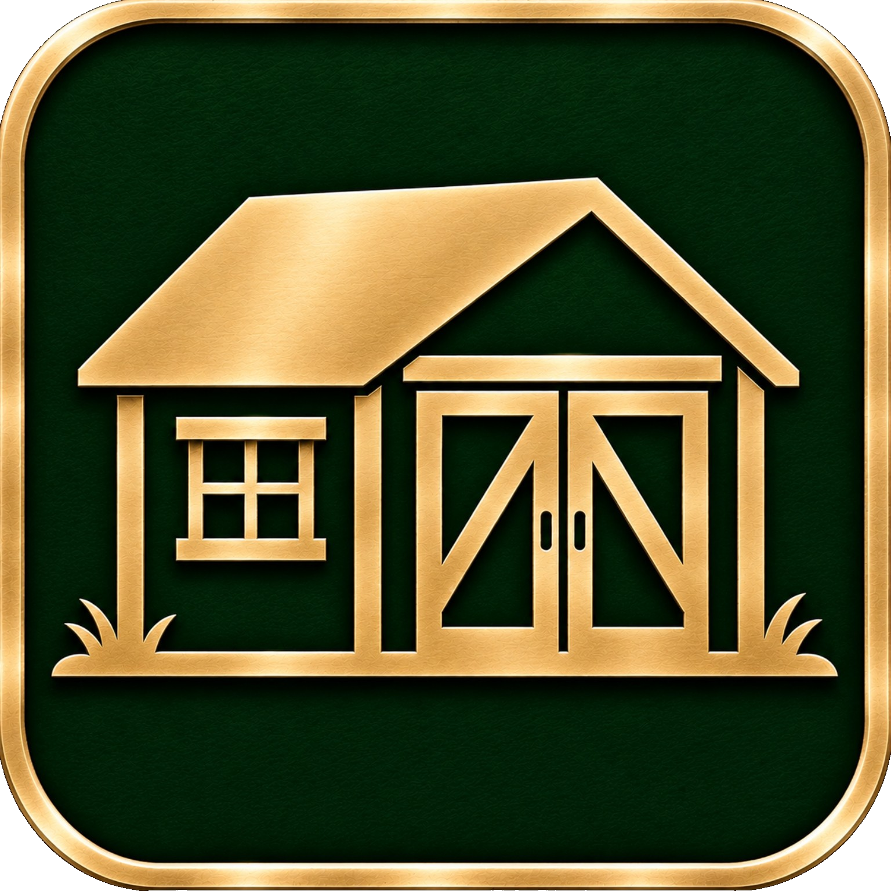

Purpose first
Start with the problem worth solving. Let the requirements guide the design.

Crooked Windmill ENGINEERINGINDEPENDENT ENGINEERING & DEVELOPMENT
We design and build useful things — from thoughtful software to practical technology and mechanical solutions. Clear thinking, careful work, and an eye toward how things perform in the real world.
Engineering is more than making something function. It is understanding the problem, choosing the right tools, and creating a solution that holds up beyond the first use.
That belief shapes everything at Crooked Windmill. We value useful ideas over empty complexity, thoughtful design over needless complication, and craftsmanship at every scale.
Start with the problem worth solving. Let the requirements guide the design.
Respect the details, understand the tradeoffs, and make decisions deliberately.
Favor maintainable systems, dependable tools, and work that can be improved over time.
A growing collection of software, systems, and engineering projects. Each begins with a practical need and develops through deliberate design.

HOUSEHOLD SYSTEMS
A shared household management system that brings schedules, tasks, and the moving pieces of family life into one dependable place.
IN ACTIVE DEVELOPMENT
INVENTORY & ORGANIZATION
A practical household inventory tool for knowing what is packed, where it belongs, and where to find it again.
IN ACTIVE DEVELOPMENTHOUSEHOLD DISPLAY
A flexible household dashboard designed to bring the information that matters to the right screen, from TVs to dedicated touch displays.
IN DEVELOPMENTMECHANICAL & PRACTICAL DESIGN
Explorations in mechanical design, prototyping, and technology — documented as projects mature.
PORTFOLIO IN PROGRESSThe best solution is not always the most complicated one. We bring the same practical mindset to every kind of problem.
Useful applications, connected workflows, and tools designed around the people who use them.
Concept development, CAD, design iteration, and an appreciation for the realities of making things.
Hardware, automation, and integrated systems that solve real problems without adding needless friction.
CROOKED WINDMILL ENGINEERING
A small independent engineering and development studio, building useful things with care.